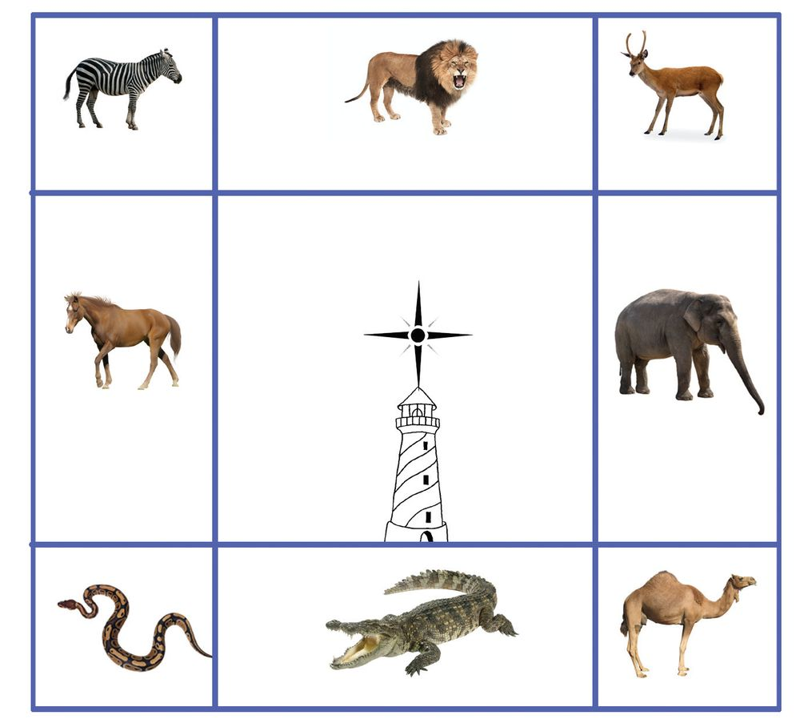
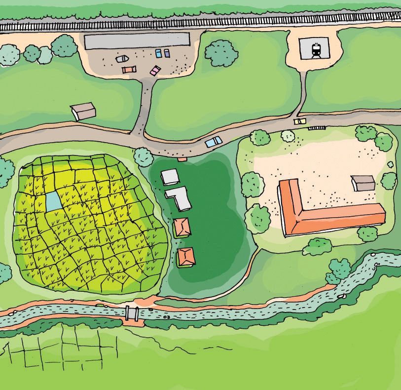

Which map is the tourist examining?
85
Reading and drawing maps
JT 643-3/EVS 4(E)Vol-2
Why is he doing so?


Which map is the tourist examining?
85
Reading and drawing maps
JT 643-3/EVS 4(E)Vol-2
Why is he doing so?


Let us read a map You learned about the different districts and important places in Kerala in Class 3. Now examine the map shown below. K as ar ag od
Kannur Wayanad K oz hi kk od e
Malappuram Palakkad
Thrissur
Ernakulam
Idukki Kottayam
Index Airport
Harbour Capital Railway 86
Pathanamthitta
Kollam m ra pu ha nt na va iru Th
Environmental Science
State boundary District boundary
A la pp uz ha


What information did you find out? Now prepare a note on Kerala including the information you collected. Index in maps Roads, railways, rivers, airports etc., are represented in a map using generally accepted symbols and colours. The index tells us what each colour and symbol in the map represents. Some of the symbols used in the map are shown below.
Symbols Railway Airport Harbour River
With the help of your teacher collect information on the important rivers, tourist’s spots, bird sanctuaries and wild life sanctuaries of Kerala.
Tourist spot Capital District headquarters Bird sanctuary
Now mark this information in the map of Kerala using appropriate symbols.
Children decided to draw the sketch of their classroom. Four of them stood at the four sides of a table. Placing a paper on the table, they started sketching. “Write your names at the top of the paper. Also mark the right 87
Reading and drawing maps
Sketching the classroom


side, left side, top and bottom,” reminded Abhi. At that time teacher came there and said “Don’t forget to draw the door, windows, benches, table and the blackboard of the class.’’
When they finished the sketch, they proudly showed it to the whole class. The other children were surprised. Four different sketches of the same class! Why were the sketches different? Can't everyone draw the sketch of the classroom in the same way? What are the things to be considered for this? North
Environmental Science
West
East South
88
The top of the map on the wall indicates North. This symbol is used to show the directions. With the help of this symbol we can find out the other directions also.


Which is the northern part of your classroom? You should draw the sketch in such a way that the northern part should be at the top of the paper. Now mark the south, east and west correctly. Draw the sketches using the following symbols. T table
D door
BB black board
W window B bench
Paste the sketches on the wall. Do all pictures look alike?
Finding out the directions We try to know the directions easily by looking at the sun. Wow ... the rising sun! So my left hand side is the North.
To which direction is Leena facing?
Which direction is indicated by Leena’s right hand?
Which direction does her shadow fall?
How can we know the directions when the sun is not seen? 89
Reading and drawing maps
Observe the picture. How does Leena find out the directions by looking at the rising sun?


The Mariner’s Compass
The Mariner’s Compass is an instrument used to find out directions. There is a magnetic needle at the centre of this instrument. This needle always points in the north-south direction. The specially marked end of the needle indicates north. We can mark the four directions keeping the Mariner’s Compass at the centre of the classroom.
Sketch of a school N W
E S
Index State Highway
Cooking shed
Stage
School building
Flag post
Well
This is the sketch of Nandana’s school.
Environmental Science
Find out the following from the sketch.
On which direction of the school is the state highway?
On which direction of the cooking shed is the well?
On which direction of the flag post is the stage?
Draw a sketch of your school in the environment diary. 90


Sanal’s Panchayath N
Sanal’s school is in Anara Panchayath.
E
W
Anara Grama Panchayath Idathara Panchayath
S
Periyapuram Panchayath
Tamil Nadu
Charalpuzha Panchayath
Index Road School
Paddy field
Public well
91
Reading and drawing maps
River


Study the map of Anara Panchayath and list the peculiarities of each ward. Ward Number 1
Peculiarities of the ward
shares border with Tamil Nadu has a public well has a school has a river
2 3 4
Now, find out the peculiarities of your panchayath from the map of your Grama Panchayath.
My District Identify your district from the map of Kerala. Now mark the following in the map of your district.
Neighbouring districts
District headquarters
Tourist centres
Rivers
Environmental Science
What else can we mark?
We can present the peculiarities of a large area on a paper. Such a representation of a geographical area is called a map. 92


Significant learning outcomes The learner
reads the map of Kerala based on the index.
marks directions on the map accurately.
prepares a sketch of a classroom and school.
finds out directions using the Mariner’s Compass.
marks important resources in the map using appropriate symbols.
marks resources using symbols in the map of Kerala and the map of his/her district using symbols.
lists the resources of the Panchayath by examining the map of the Panchayath.
illustrates the resource in the map of the district.
Let us assess 1. Direction Game A child should stand in the block lying in the centre of nine blocks. When the command ‘East’ is given, he should jump to the block on the east. He must immediately return to the central block. The game is repeated commanding different directions. The child who plays for a longer time without going wrong stands first. North
West
South West
North East
East
South
South East
93
Reading and drawing maps
North West


2. Spot the direction Liyana is now in the Observatory Tower in the zoo. Write down the direction of each animal with respect to the Observatory Tower.
N or th
W h ut o S
w es t
st we
N
h rt o N So ut h
S
st ea
E ea st
Answer the following questions.
Environmental Science
Which creature is on the northern direction of the tower?
On which direction of the tower is the camel?
On which direction of the tower is the horse?
On which direction of the tower is the crocodile?
Identify the position of the snake.
94


3. Let us prepare an index What are the details that you can get from the sketch?
Railway station
Bus stand
Police station Road e offic Post
School
Paddy field
River Bridge
Prepare the index for each of the item you found and illustrate them in the box given below. Police station
Index
Railway station Bus stand Post office River Bridge
95
Reading and drawing maps
$ $ $ $ $ $ $
4. Put a mark against the correct one. The name of the instrument used to identify direction. (Thermometer, Speedometer, Mariner’s Compass,Telescope)
Which direction does the top of a map indicate? (east, west, south, north)
5. What does each of the following symbols represent?
RS
SH
Extended activities
Environmental Science
Draw a sketch of your house. Indicate the buildings, lanes, roads and neighbouring houses. Make a model of your school using cardboard and newspaper.
96